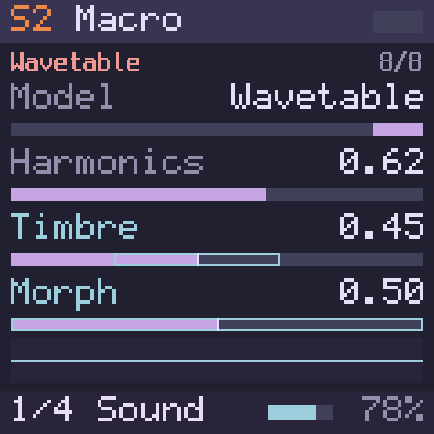

S2Sound 2
Snapshot ALoad into S2…Export sound…

On the FM-1HOME · S2 · page 1/4, following the editor. At this width the panel folds to its screen.Follow the editor
Engine Macro31.4 KB · 12 voices
Engines from Mutable Instruments Plaits by Emilie Gillet (MIT)
Page 1ALGORITHM, KNOB2–4
Page 2KNOB1–3
Page 3KNOB1–4
Page 4KNOB1–2
Cables in2 of 32 slots
LFO2 → Timbre+20 %slot 4 · via S2VEL · global
ENV3 → Morph+60 %slot 5 · per voice · now C3 0.92 · E3 0.71 · G3 0.55
+ Add a cable into Sound 2
Inserts in order, In1 then In2
In1Echo64.2 KB
This repository (MIT). Ping-pong topology after Zoelzer's DAFX
Page 1KNOB1–4
Page 2KNOB1–3
In2empty85.2 KB free
⌕ type to filter · 22 effects
Filterfilter, toneunder 1 KB
Compdynamicsunder 1 KB
Drivedrive, colourunder 1 KB
Roomspace+40.2 KB
Hallspace+48.7 KB
Platespace+64.2 KB
PSX Verbspace46.0 KB over
Refused before anything changes: PSX Verb needs 131.3 KB and 85.2 KB is free.
MIDI effect ArpOn
After Yarns, MCL and Super Arp; the code is our own · 0.7 KB · every change reaches the next note
Playpage 1
Rhythmpage 2
Chancepage 3
FEELOct Mode Span · Velocity 0 · Swing 50 % · Join Now▸
MOREOrder Pitch · Repeat 1 · Chord % 0 % · Oct Jump 0 %▸
KEYSLatch Off · Sync Key · Ratchet % 100 % · Gate Sprd 0▸
SEEDSeed 0▸
S2 › Engine › Morph0.500.00–1.00 · default 0.50takes modulation · per voice · smooth · uid 4
← → one detent⇧ tenEnter typeD defaultC cable in